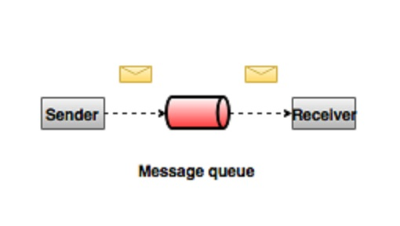
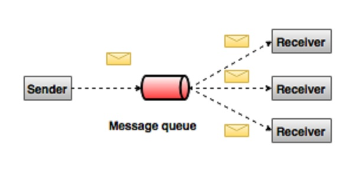
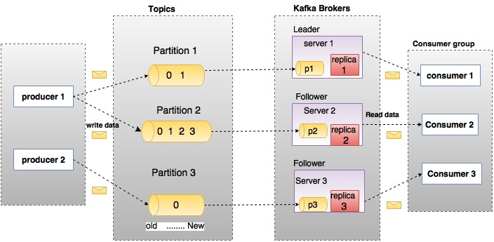
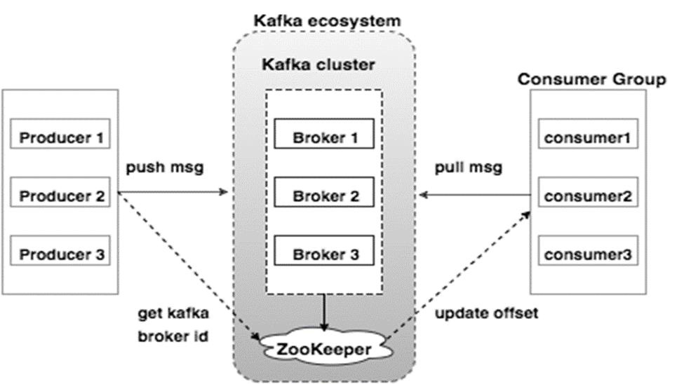
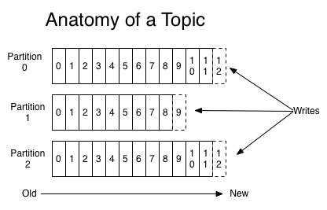
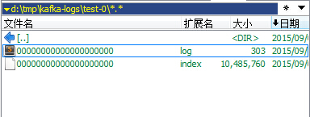

Kafka入门
Kafka入门
Kafka最初是由LinkedIn（领英）开发，并随后于2011年初开源，并于2012年10月23日由Apache Incubator孵化出站。Kafka由Scala和Java编写。该项目的目标是为处理实时数据提供一个统一、高吞吐、低延迟的平台。其持久化层本质上是一个“按照分布式事务日志架构的大规模发布/订阅消息队列”，这使它作为企业级基础设施来处理流式数据非常有价值。此外，Kafka可以通过Kafka Connect连接到外部系统（用于数据输入/输出），并提供了Kafka Streams（一个Java流式处理库）。
Apache的Kafka™是一个分布式流平台(a distributed streaming platform)
- 它可以让你发布和订阅记录流。在这方面，它类似于一个消息队列或企业消息系统。
- 它可以让你持久化收到的记录流，从而具有容错能力。
- 它可以让你处理收到的记录流。
何为消息系统
消息系统负责将数据从一个应用程序传输到另一个应用程序，因此应用程序可以专注于数据，但不用关心消息如何共享。 分布式消息传递基于可靠消息队列的概念。 消息在客户端应用程序和消息传递系统之间异步排队。 有两种类型的消息模式可用：一种是点对点，另一种是发布-订阅（pub-sub）消息系统。 大多数消息模式遵循pub-sub。
点对点消息系统
在点对点消息系统中，消息被保留在队列中。 一个或多个消费者可以消费队列中的消息，但是特定消息最多只能由一个消费者消费。 一旦消费者读取队列中的消息，它就从该队列中消失。 该系统的典型示例是订单处理系统，其中每个订单将由一个订单处理器处理，但多个订单处理器也可以同时工作。

发布-订阅消息系统
在发布-订阅系统中，消息被保留在一个主题中。与点对点系统不同，消费者可以订阅一个或多个主题并使用该主题中的所有消息。在发布-订阅系统中，消息生产者称为发布者，消息使用者称为订阅者。

Kafka通常用于下面的使用场景
监控
Kafka通常用于监控数据的操作。 这涉及聚合来自分布式应用程序的统计信息，以产生集中化的操作数据。日志聚合方案
kafka可以用来收集跨组织的多个服务的日志，并将这些日志转为统一的格式供消费者使用。流式处理
流行的实时计算框架，如Storm和Spark流式读取topic中的数据进行变换、处理，然后将结果写入新的，用户或应用需要使用的topic中。Kafka强大的持久性功能在流式处理上下文中也是非常有用的。解耦
在项目启动之初来预测将来项目会碰到什么需求，是极其困难的。消息系统在处理过程中间插入了一个隐含的、基于数据的接口层，两边的处理过程都要实现这一接口。这允许你可以做出独立的扩展或者是修改两边的处理过程，只要确保它们遵守同样的接口约束。
Kafka的架构

在上图中一个topic被配置为拥有3个分区，分区1包含两个偏移因子0和1。分区2包含4个偏移因子0， 1， 2 和 3。分区3包含1个偏移因子0。 分区副本的id和该副本所在的broker的id一致。
假设，如果一个topic配置的副本因子为3，则kafka会针对该topic的每个分区创建3个独立的副本并将这些副本尽量均匀分散到集群的每个节点上。为了在集群的节点间进行负载，每一个broker都会保存一个或多个这样的分区。多个producer和consumer可以同时发布或获取消息。
相关术语
| 组件 | 描述 |
|---|---|
| topics | 隶属于特定分类的消息流称为topic。数据保存在topic中 |
| partitions | topics会被切分为分区。针对每一个主题，kafka最少保持一个分区。每一个这样的分区以顺序不可变的方式保存消息。一个分区有一个或多个大小相同的segment文件组成。Topics拥有多个分区，因此可以保存大量的数据 |
| Partition offset | 每个分区中的消息拥有一个唯一的序列id，被称为offset |
| Replicas of partition | 分区副本仅仅是分区的备份，不会对副本分区进行读写操作，只是用来防止数据丢失 |
| Brokers | 1. Brokers 是维护发布消息的系统。每个broker针对每个topic可能包含0个或多个该topic的分区。假设，一个topic拥有N个分区，并且集群拥有N个broker，则每个broker会负责一个分区 2. 假设，一个topic拥有N个分区，并且集群拥有N+M个broker，则前N个broker每个处理一个分区，剩余的M个broker则不会处理任何分区 3。 假设，一个topic拥有N个分区，并且集群拥有M个broker（M < N），则这些分区会在所有的broker中进行均匀分配。每个broker可能会处理一个或多个分区。这种场景不推荐使用，因为会导致热点问题和负载不均衡问题 |
| Kafka Cluster | 由多个broker组成的kafka被称为kafka集群。一个kafka集群在不停机扩展。集群负载所有消息的持久化和副本处理 |
| Producers | Producers 是向一个或多个Kafka中topic发布消息的发布者。Producers 将消息发送到 Kafka 的 brokers中。任意时刻 producer 发布到broker中的消息都会被追加到某个分区的最后一个segment文件的最后。Producer 也可以选择消息发送到指定的分区 |
| Consumers | Consumers 从broker读取数据。Consumers 订阅一个或多个 topic，并通过pull方式从broker拉取订阅的数据 |
| Leader | Leader是负责某个分区数据读写操作的节点。每个分区都有一个leader |
| Follower | 跟随leader操作的节点被称为follower。如果leader节点不可用，则会从所有的fellower中挑选一个作为新的leader节点。一个follower节点作为leader节点一个普通的消费者，拉取leader数据并更新自己的数据存储 |
kafka集群模型

下面的表格描述了在上图中提到的每个组件的详细信息。
| 组件 | 描述 |
|---|---|
| Broker | Kafka集群通常使用多个Broker来实现集群的负载均衡。 Kafka brokers 是无状态的，因为它们使用 ZooKeeper 来保持它们的集群信息。 单个Kafka Broker 每秒可以处理数十万的读写请求，即使保存了TB级的数据也不会影响性能。Kafka broker leader 的选举是通过Zookeeper实现的 |
| ZooKeeper | ZooKeeper是用来管理和协调Kafka broker 的。ZooKeeper 服务主要用来通知 producer 和 consumer 关于任何新加入Kafka集群或某个Kafka Broker宕机退出集群的消息。 根据收到Zookeeper的关于Broker的存在或失败的消息通知，然后生产者和消费者采取决定，并开始与其它Broker协调它们的任务 |
| Producers | producer将数据推送给Broker。 当新Broker启动时，所有生产者搜索它并自动发送消息到该新Broker。 Kafka Producer不等待来自Broker的确认，并以Broker可以处理的速度发送消息 |
| Consumers | 由于 Kafka brokers 是无状态的， 因此需要Consumer来维护根据partition offset已经消费的消息数量信息。 如果 consumer 确认了一个指定消息的offset，那也就意味着 consumer 已经消费了该offset之前的所有消息。Consumer可以向Broker异步发起一个拉取消息的请求来缓存待消费的消息。consumers 也可以通过提供一个指定的offset值来回溯或跳过Partition中的消息。Consumer 消费消息的offset值是保存在ZooKeeper中的 |
Kafka工作流程
Kafka是由分裂为一个或多个partition的topic的集合。 Kafka中的partition可以认为是消息的线性排序序列，其中每个消息由它们的索引（称为offset）来标识。 Kafka集群中的所有数据是每个partition数据分区的并集。 新写入的消息写在分区的末尾，消息由消费者顺序读取。通过将消息复制到不同的Broker来提供持久性。Kafka以快速，可靠，持久，容错和零停机的方式提供基于pub-sub和队列模型的消息系统。 在这两种情况下，生产者只需将消息发送到topic，消费者可以根据自己的需要选择任何一种类型的消息传递系统。
Pub-Sub 消息模型工作流程
- 生产者定期向topic发送消息。
- Kafka broker 根据配置将topic的消息存储到指定的partition上。Kafka确保所有的消息均匀分布在topic的所有partition上。如果producer发送了两条消息，并且该topic有两个partition，则每个partition会有一条消息。
- Consumer 订阅指定的topic。
- 一旦消费者订阅了topic，Kafka将向消费者提供topic的当前offset，并且还将offset保存在Zookeeper中。
- 消费者将定期请求Kafka（如100 Ms）新消息。
- 消费者将收到消息并进行处理。
- 一旦消息被处理，消费者将向Kafka broker发送确认。
- 一旦Kafka收到确认，它将offset更改为新值，并在Zookeeper中更新它。 由于offset在Zookeeper中被维护，消费者可以正确地读取下一条消息，即使服务器宕机后重启。
- 以上流程将重复，直到消费者停止请求。
- 消费者可以随时回退/跳转到某个topic的期望offset处，并读取所有后续消息。
队列消息模型工作流程 & Consumer Group
在基于队列的消息系统中，取代单个消费者的是订阅了相同topic的一群拥有相同Group ID的消费者集群。简单来说，订阅具有相同“组ID”的主题的消费者被认为是单个组，并且消息在它们之间共享。
- 生产者定期向topic发送消息。
- Kafka broker 根据配置将topic的消息存储到指定的partition上。
- 单个consumer以名为Group-1的Group ID 订阅名为Topic-01的topic。
- Kafka 会以和Pub-Sub消息模型相同的方式和consumer进行交互直到新的消费者以同样的Group ID加入到消费者分组中。
- 一旦新的消费者加入后，Kafka将操作切换到共享模式，将所有topic的消息在两个消费者间进行均衡消费。这种共享行为直到加入的消费者结点数目达到该topic的分区数。
- 一旦消费者的数目大于topic的分区数，则新的消费者不会收到任何消息直到已经存在的消费者取消订阅。出现这种情况是因为Kafka中的每个消费者将被分配至少一个分区，并且一旦所有分区被分配给现有消费者，新消费者将必须等待。
- 该功能被称为 “Consumer Group”。以同样的方式，Kafka将以非常简单和高效的方式提供这两种系统功能。
kafka 消息的语义
- 消息系统系统一般有以下的语义：
- At most once：消息可能丢失，但不会重复投递
- At least once：消息不会丢失，但可能会重复投递
- Exactly once：消息不丢失、不重复，会且只会被分发一次（真正想要的）
- Producer 发送消息以后，有一个commit的概念，如果commit成功，则意味着消息不会丢失，但是Producer有可能提交成功后，没有收到commit的消息。这有可能造成 at least once 语义。
- 从 Consumer 角度来看，我们知道 Offset 是由 Consumer 自己维护。所以何时更新 Offset 就决定了 Consumer 的语义。如果收到消息后更新 Offset，如果 Consumer crash，那新的 Cunsumer再次重启消费，就会造成 At most once 语义（消息会丢，但不重复）。
- 如果 Consumser 消费完成后，再更新 Offset。如果 Consumer crash，别的 Consumer 重新用这个 Offser 拉取消息，这个时候就会造成 at least once 的语义（消息不丢，但多次被处理）。
所以结论：默认Kafka提供at-least-once语义的消息分发，允许用户通过在处理消息之前保存位置信息的方式来提供at-most-once语义。如果我们可以实现消费是幂等的，这个时候就可以认为整个系统是Exactly once的了。
kafka中的partition和offset
说到分区，就要说kafka对消息的存储.在官方文档中。

首先，kafka是通过log(日志)来记录消息发布的.每当产生一个消息，kafka会记录到本地的log文件中，这个log和我们平时的log有一定的区别.这里可以参考一下The Log。
分区partition
kafka是为分布式环境设计的，因此如果日志文件，其实也可以理解成消息数据库，放在同一个地方，那么必然会带来可用性的下降，一挂全挂，如果全量拷贝到所有的机器上，那么数据又存在过多的冗余，而且由于每台机器的磁盘大小是有限的，所以即使有再多的机器，可处理的消息还是被磁盘所限制，无法超越当前磁盘大小，因此有了partition的概念。
kafka对消息进行一定的计算，通过hash来进行分区。这样，就把一份log文件分成了多份。如上面的分区读写日志图，分成多份以后，在单台broker上，比如快速上手中，如果新建topic的时候，我们选择了–replication-factor 1 --partitions 2，那么在log目录里，我们会看到test-0目录和test-1目录.就是两个分区了。
偏移offset
分区就是一个有序的，不可变的消息队列。新来的commit log持续往后面加数据。这些消息被分配了一个下标(或者偏移)，就是offset，用来定位这一条消息。
消费者消费到了哪条消息，是保持在消费者这一端的。消息者也可以控制，消费者可以在本地保存最后消息的offset，并间歇性的向zookeeper注册offset，也可以重置offset。
partition存储的时候，又分成了多个segment(段)，然后通过一个index，索引，来标识第几段。这里先可以去看一下本地log目录的分区文件夹。例如，test-0，这个分区里面，会有一个index文件和一个log文件：

对于某个指定的分区，假设每5个消息，作为一个段大小，当产生了10条消息的情况想，目前有会得到：
0.index (表示这里index是对0-4做的索引)
5.index (表示这里index是对5-9做的索引)
10.index (表示这里index是对10-15做的索引，目前还没满)
和
0.log
5.log
10.log
，当消费者需要读取offset=8的时候，首先kafka对index文件列表进行二分查找，可以算出，应该是在5。index对应的log文件中，然后对对应的5.log文件，进行顺序查找：
5->6->7->8，直到顺序找到8就好了。